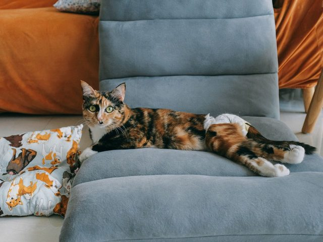
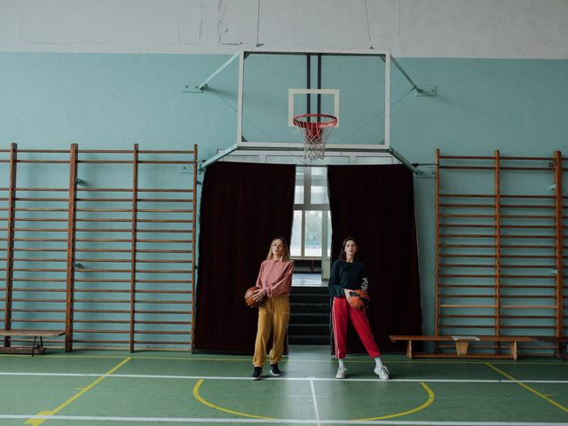
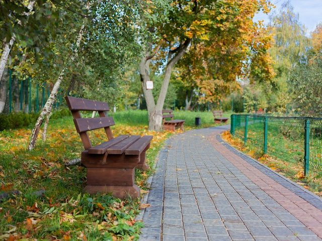
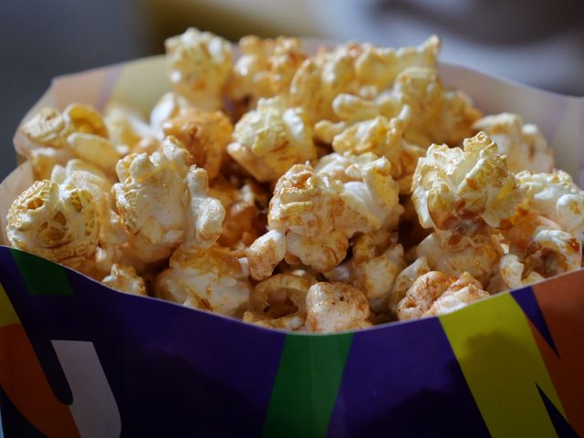
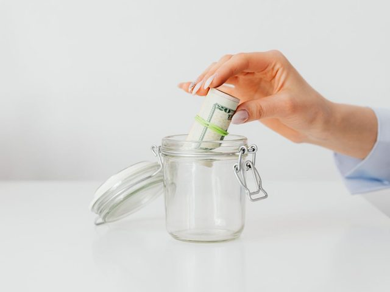

LALA WORD · UNIT 13
一字多義（十三）
Is It True?
32 個單字一字多義
本單元單字一覽
post 是網路上的貼文，也是「郵寄」；lie 是說謊，也是「躺」。這個單元有 5 個主題單字、16 個更多單字，再整理 wish／hope，和字尾 -er／-or、-ess、字首 inter-。
postlietrickcheckseriousbatbookcopycrazygyminterestnobodypopracesentencesinceslimspelltiptouchwishfarmeractorwaitermail carriercan openerCD playeractresswaitressprincessinterviewInternet
每個字先聽 🔊，再一個意思一個意思看例句。
1. post 主題單字．4 個意思

post
post - posted - posted - posting
n.貼文；公布的資訊
Her post got 500 likes.
她的貼文有五百個讚。
n.郵政；郵件post office 郵局
I sent the gift by post.
我用郵寄的方式寄禮物。
v.發布（資訊）
Don't post your address online.
不要把你的地址貼到網路上。
v.寄出（信件、包裹）
Can you post this letter for me?
你可以幫我寄這封信嗎？
2. lie 主題單字．3 個意思

lie
說謊：lie - lied - lied；躺：lie - lay - lain
n.謊言tell a lie 說謊
Don't tell a lie.
不要說謊。
v.說謊lie - lied - lied - lying
He lied to his mom about his grades.
他對媽媽謊報成績。
v.躺；臥lie - lay - lain - lying；lie down 躺下
The cat is lying on the sofa.
貓躺在沙發上。
3. trick 主題單字．3 個意思

trick
trick - tricked - tricked - tricking
n.惡作劇；騙局play a trick on 對…惡作劇
They played a trick on their teacher.
他們對老師惡作劇。
v.欺騙trick + 人 + into + V-ing 騙某人做
The man tricked me into buying a fake watch.
那個男人騙我買了假手錶。
n.技巧；訣竅magic trick 魔術
Here is a trick to remember new words.
這是一個記新單字的訣竅。
4. check 主題單字．4 個意思

check
check - checked - checked - checking
v.檢查；確認check out 去看看
Check your answers before you hand in the test.
交考卷前檢查你的答案。
n.檢查
The doctor gave me a quick check.
醫生幫我做了簡單的檢查。
n.支票
Can I pay by check?
我可以用支票付款嗎？
n.帳單
Waiter, can we have the check, please?
服務生，請給我們帳單。
5. serious 主題單字．3 個意思

serious
serious - more serious - most serious
adj.嚴肅的
Why do you look so serious?
你為什麼看起來這麼嚴肅？
adj.認真的be serious about 對…是認真的
Are you serious? You're moving to Japan?
你是認真的嗎？你要搬去日本？
adj.嚴重的
Air pollution is a serious problem.
空氣汙染是很嚴重的問題。
6. bat 更多單字．3 個意思

bat
bat - batted - batted - batting
n.蝙蝠as blind as a bat 視力很差
Bats sleep in the daytime.
蝙蝠白天睡覺。
n.球棒
He hit the ball with a bat.
他用球棒打球。
v.用球棒擊球
It's your turn to bat.
輪到你打擊了。
7. book 更多單字．2 個意思
book
book - booked - booked - booking
n.書
I borrowed three books from the library.
我從圖書館借了三本書。
v.預訂
Dad booked a hotel room for us.
爸爸幫我們訂了飯店房間。
8. copy 更多單字．5 個意思

copy
copy - copied - copied - copying；複數 copies
v.抄襲
Don't copy your classmate's homework.
不要抄同學的功課。
v.複製copy and paste 複製貼上
Copy the file and send it to me.
把檔案複製一份寄給我。
v.模仿
My little sister copies everything I do.
我妹妹什麼都學我。
n.複製品；影本
This painting is just a copy.
這幅畫只是複製品。
n.一本；一份
The book sold a million copies.
這本書賣了一百萬本。
9. crazy 更多單字．4 個意思

crazy
crazy - crazier - craziest
adj.發瘋的go crazy 發瘋
The noise is driving me crazy.
那噪音快把我逼瘋了。
adj.著迷的be crazy about 為…著迷
My brother is crazy about basketball.
我哥哥超迷籃球。
adj.很生氣的
Mom will go crazy if she sees this mess.
媽媽看到這團亂會氣炸。
n.瘋子
Only a crazy would swim in this icy water.
只有瘋子才會在這麼冰的水裡游泳。
10. gym 更多單字．3 個意思

gym
複數 gyms
n.體育館
We play basketball in the gym on rainy days.
下雨天我們在體育館打籃球。
n.健身房
My aunt goes to the gym every morning.
我阿姨每天早上去健身房。
n.體操；體育課
Bring your shoes for gym class.
體育課要帶運動鞋。
11. interest 更多單字．4 個意思

interest
interest - interested - interested - interesting
n.興趣
She has a strong interest in science.
她對科學很有興趣。
n.利益
The leader should think about the interests of everyone.
領導者應該考慮每個人的利益。
n.利息
The bank pays interest on your savings.
銀行會為你的存款付利息。
v.使感興趣be interested in 對…有興趣
History doesn't interest me.
歷史引不起我的興趣。
12. nobody 更多單字．2 個意思

nobody
複數 nobodies
pron.沒有人
Nobody knows the answer.
沒有人知道答案。
n.小人物
He was a nobody before he became famous.
他成名前只是個無名小卒。
13. pop 更多單字．4 個意思

pop
pop - popped - popped - popping
v.（使）爆開
The balloon popped.
氣球破了。
v.爆（玉米花）
Let's pop some corn for the movie.
我們爆點爆米花配電影吧。
n.流行音樂；流行歌曲
I like K-pop.
我喜歡韓國流行音樂。
adj.流行的；通俗的
She is a pop singer.
她是流行歌手。
14. race 更多單字．3 個意思

race
race - raced - raced - racing
v.和…比賽速度
I'll race you to the gate!
我們比賽看誰先跑到大門！
n.比賽（速度）
Our class won the relay race.
我們班贏了接力賽。
n.種族；民族
We should respect people of every race.
我們應該尊重每個種族的人。
15. sentence 更多單字．3 個意思

sentence
sentence - sentenced - sentenced - sentencing
n.句子
Make a sentence with the word "happy."
用 happy 造一個句子。
n.判決；刑罰
The thief got a two-year sentence.
小偷被判兩年徒刑。
v.宣判
The judge sentenced him to two years in prison.
法官判他兩年徒刑。
16. since 更多單字．4 個意思

since
adv.從那時起
He moved away last year, and I haven't seen him since.
他去年搬走，從那之後我就沒見過他。
prep.自…以來
I have lived here since 2020.
我從 2020 年起就住在這裡。
conj.自從…
We have been friends since we were five.
我們從五歲起就是朋友。
conj.因為；既然
Since it's raining, let's stay home.
既然在下雨，我們待在家吧。
17. slim 更多單字．3 個意思
🪄
slim
slim - slimmer - slimmest；slim - slimmed - slimmed - slimming
adj.苗條的
She is tall and slim.
她又高又苗條。
adj.渺茫的；微小的
We only have a slim chance of winning.
我們贏的機會很渺茫。
v.減輕體重slim down 減重
Dad is trying to slim down.
爸爸正在努力減重。
18. spell 更多單字．4 個意思

spell
spell - spelled（spelt） - spelled（spelt） - spelling
v.拼字
How do you spell your name?
你的名字怎麼拼？
v.輪替；接手
Can I spell you for a while?
我可以換手幫你一下嗎？
n.一段時間
We had a spell of hot weather last week.
上星期熱了一陣子。
n.咒語；魔咒
The witch put a spell on the princess.
巫婆對公主下了咒。
19. tip 更多單字．4 個意思

tip
tip - tipped - tipped - tipping
v.給小費
In the U.S., people tip the waiter.
在美國，人們會給服務生小費。
n.小費
We left a tip on the table.
我們在桌上留了小費。
n.建議；訣竅
Here are some tips for learning English.
這裡有一些學英文的訣竅。
v.（使）傾斜；翻倒
Don't tip your chair back.
不要把椅子往後翹。
20. touch 更多單字．3 個意思
touch
touch - touched - touched - touching
v.觸摸
Please don't touch the paintings.
請勿觸摸畫作。
n.觸覺keep in touch 保持聯絡
Babies learn about things by touch.
嬰兒靠觸覺認識東西。
v.感動
Her story touched everyone.
她的故事感動了每個人。
21. wish 更多單字．4 個意思

wish
wish - wished - wished - wishing
v.希望（不太可能的事）I wish + 過去式：與現在事實相反
I wish I could fly.
真希望我會飛。
n.願望make a wish 許願
Close your eyes and make a wish.
閉上眼睛許個願。
v.祝福
We wish you a happy new year.
祝你新年快樂。
n.祝福（wishes）
Best wishes to you and your family.
祝福你和你的家人。
22. farmer 更多單字．1 個意思
👨🌾
farmer
farm + -er
n.農夫
The farmer grows rice and corn.
農夫種稻米和玉米。
23. actor 更多單字．1 個意思
🎭
actor
act + -or
n.男演員；演員
He is a famous actor.
他是有名的演員。
24. waiter 更多單字．1 個意思
🤵
waiter
wait + -er
n.男服務生
The waiter brought us some water.
服務生端水給我們。
25. mail carrier 更多單字．1 個意思
📬
mail carrier
carry + -er
n.郵差
The mail carrier comes at ten every morning.
郵差每天早上十點來。
26. can opener 更多單字．1 個意思
🥫
can opener
open + -er
n.開罐器
I need a can opener to open the beans.
我需要開罐器打開豆子罐頭。
27. CD player 更多單字．1 個意思
💿
CD player
play + -er
n.CD 播放器
Grandpa still uses a CD player.
爺爺還在用 CD 播放器。
28. actress 更多單字．1 個意思
👩🎤
actress
act + -ress
n.女演員
She won the Best Actress award.
她得到最佳女主角獎。
29. waitress 更多單字．1 個意思
🙋♀️
waitress
wait + -ress
n.女服務生
The waitress took our order.
女服務生幫我們點餐。
30. princess 更多單字．1 個意思
👸
princess
prince + -ess
n.公主
The princess lived in a big castle.
公主住在一座大城堡裡。
31. interview 更多單字．2 個意思
🎤
interview
inter- + view
n.面試；採訪
I have a job interview tomorrow.
我明天有工作面試。
v.採訪；面試
The reporter interviewed the singer.
記者採訪了那位歌手。
32. Internet 更多單字．1 個意思
🌐
Internet
inter- + net
n.網際網路surf the Internet 上網
You can find a lot of information on the Internet.
你可以在網路上找到很多資訊。
易混淆字：wish 和 hope
| 單字 | 用法 | 例句 |
|---|---|---|
| wish | 希望不太可能或不會發生的事：I wish + 過去式；也用來祝福 | I wish I were taller.／I wish you good luck. |
| hope | 希望「有可能」發生的事：hope + to V／hope + that 子句 | I hope I can pass the test. |
字尾 -er／-or：做某件事的人或東西
| 原來的字 | 加字尾 | 意思 |
|---|---|---|
| farm 耕作 | farmer | 農夫 |
| act 演戲 | actor | 演員 |
| wait 等候 | waiter | 服務生 |
| carry 搬運 | mail carrier | 郵差 |
| open 打開 | can opener | 開罐器 |
| play 播放 | CD player | CD 播放器 |
字尾 -ess：女性
| 原來的字 | 加 -ess | 意思 |
|---|---|---|
| actor 男演員 | actress | 女演員 |
| waiter 男服務生 | waitress | 女服務生 |
| prince 王子 | princess | 公主 |
字首 inter-：在…之間；互相
| 原來的字 | 加 inter- | 意思 |
|---|---|---|
| view 看法 | interview | 面試；採訪 |
| net 網子 | Internet | 網際網路 |
一字多義：最常見 vs. 容易忽略的意思
| 單字 | 最常見的意思 | 容易忽略的意思 |
|---|---|---|
| lie | 說謊 | 躺（lie - lay - lain） |
| check | 檢查 | 支票；帳單 |
| bat | 球棒 | 蝙蝠 |
| book | 書 | 預訂 |
| race | 比賽 | 種族 |
| sentence | 句子 | 判決 |
| spell | 拼字 | 咒語；一段時間 |
| tip | 小費 | 訣竅；傾斜 |
快問快答：這句的 粗體字 是什麼意思？
1Can you post this letter for me?寄出（信件、包裹）
2Here is a trick to remember new words.技巧；訣竅
3Air pollution is a serious problem.嚴重的
4Dad booked a hotel room for us.預訂
5Only a crazy would swim in this icy water.瘋子
6History doesn't interest me.使感興趣
7She is a pop singer.流行的；通俗的
8The judge sentenced him to two years in prison.宣判
快問快答：這句的 粗體字 是什麼意思？
1Dad is trying to slim down.減輕體重
2Don't tip your chair back.（使）傾斜；翻倒
3Best wishes to you and your family.祝福（wishes）
4He is a famous actor.男演員；演員
5The mail carrier comes at ten every morning.郵差
6Grandpa still uses a CD player.CD 播放器
7The waitress took our order.女服務生
8The reporter interviewed the singer.採訪；面試
學完了！接下來
複習方法
review
- 回到「📗 單字卡」，按「遮中文」，看例句說出每個意思
- 特別記「容易忽略的意思」（例如 pen 圍欄、ball 舞會）
- 每個例句跟著 🔊 唸一次
準備好了
- 按右上角「📝 前往測驗」
- 測驗錯的題目要訂正到全對
- 訂正完成補送 1 點